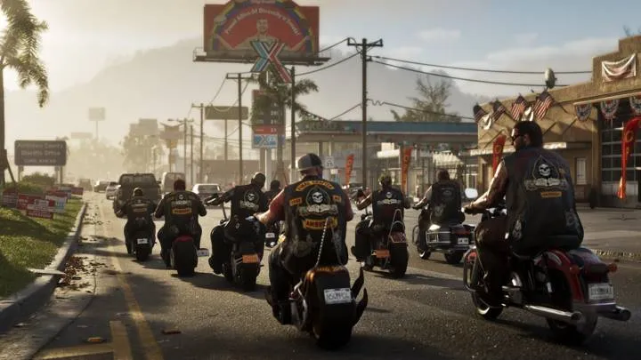
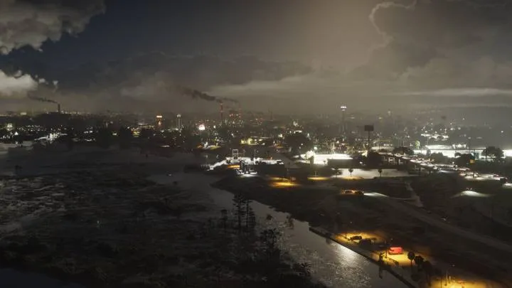
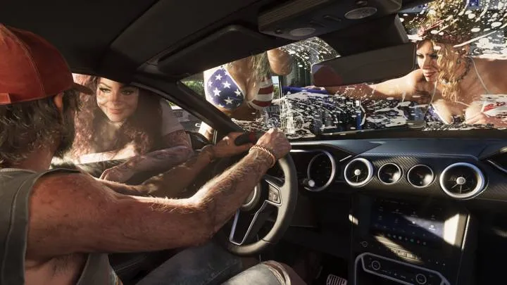
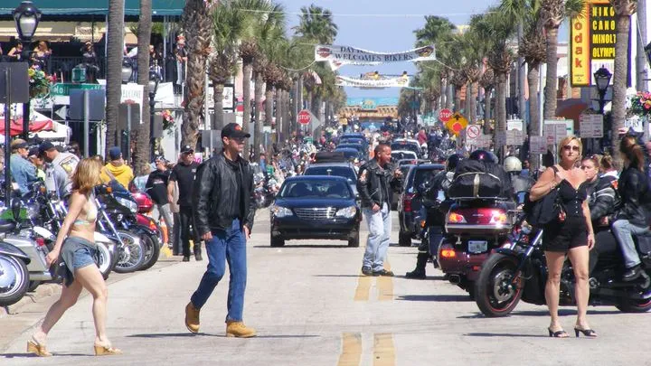
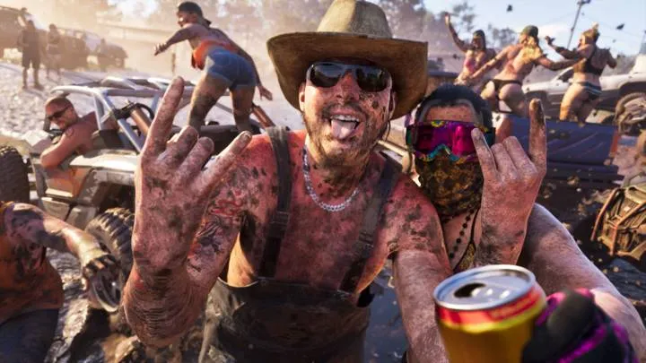
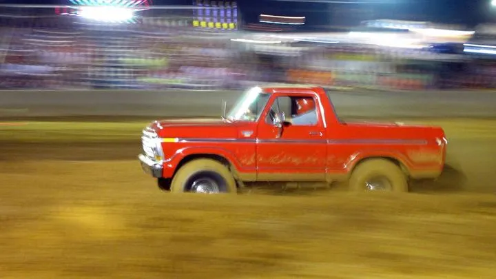

По описанию Rockstar, Амброзия держится на сахарном заводе компании Allied Crystal, а на улицах хозяйничают байкеры. Прототип по версии фанатов и игровых СМИ — Клюистон на южном берегу озера Окичоби, «самый сладкий город Америки».
Окичоби — крупнейшее пресноводное озеро Флориды, около 1900 км². Вокруг — сотни тысяч акров сахарного тростника, которые до сих пор поджигают перед уборкой.
Коротко
- Прототип — Клюистон и сахарный пояс у озера Окичоби (версия фанатов).
- Клюистон зовёт себя «самым сладким городом Америки».
- Окичоби — крупнейшее пресное озеро Флориды.



Сравнения в регионе (4)
Места 1
Бренды 1
Культура 2

vsПо мотивамБайкеры Амброзии и Байк-неделя ДейтоныКультура · Амброзия


vsСкопированоГрязевая вечеринка и мад-парки ФлоридыКультура · Амброзия